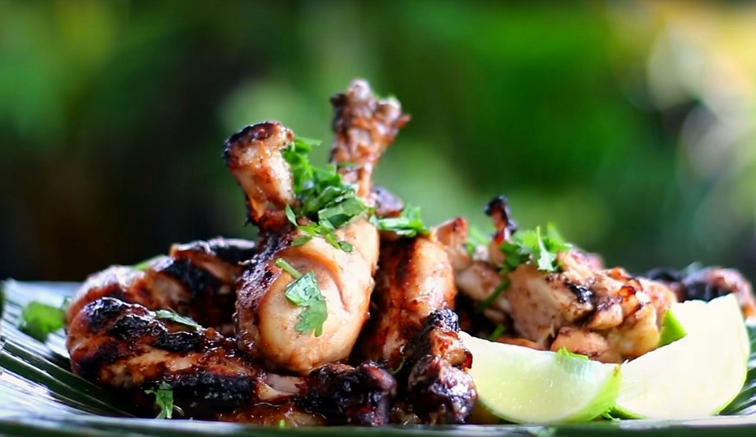

Grillade kycklingklubbor
Grillade kycklingklubbor är en perfekt del av en grillbuffé. Se med fördel till att ett gäng ligger på grillen och tillagas så att de är färdiga när faten börjar tömmas. För på buffébordet går de nämligen garanterat åt!
- 60 min
- 10 ingredienser